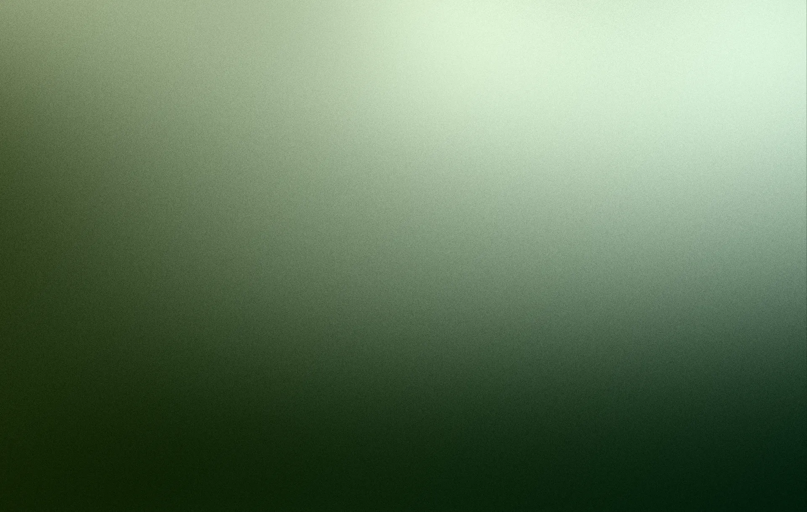
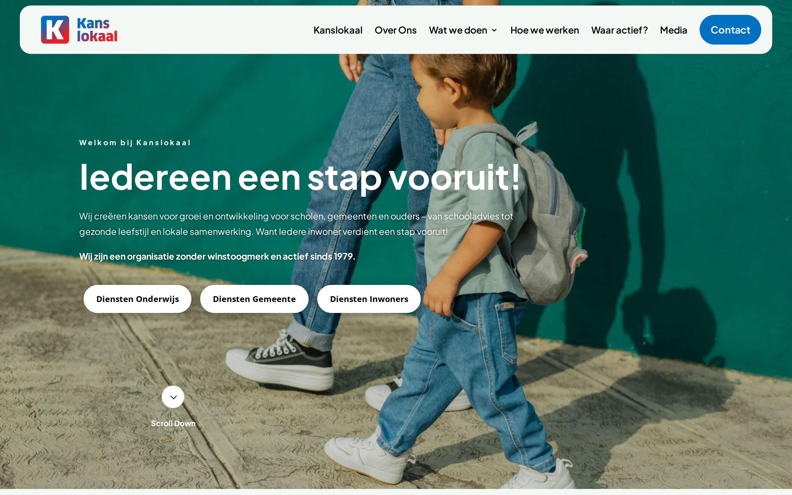
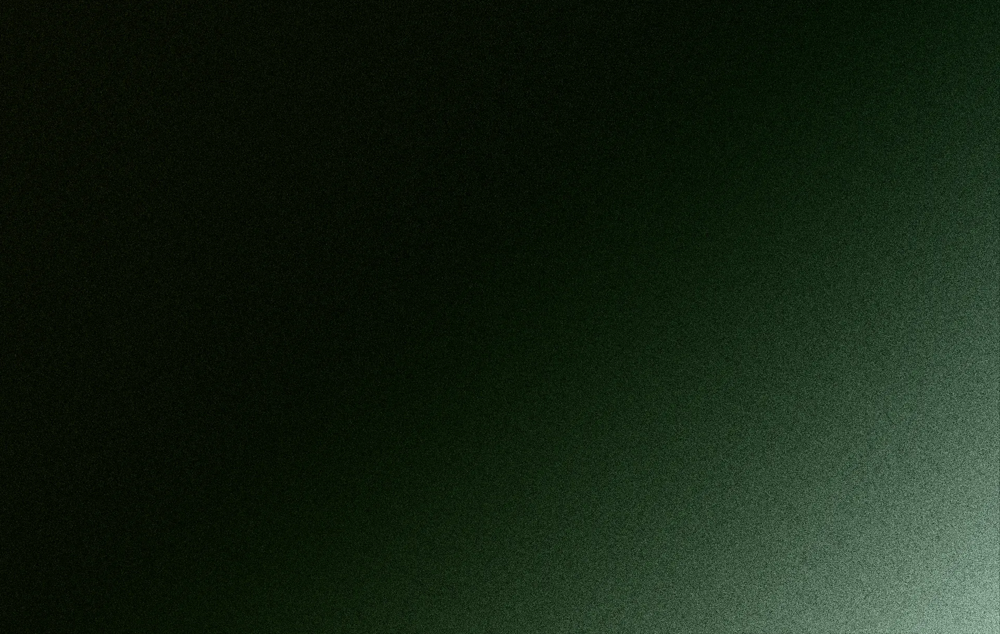

Elk sterk merk begint met richting. Wij bouwen het fundament waar branding, content en groei op steunen. Onderbouwd en scherp.
Strategie is geen document dat in een la verdwijnt. Het is de rode draad door elk ontwerp, elke campagne en elk stuk content.
Waar sta je nu, waar wil je naartoe? Wij bepalen je unieke positie in de markt en vertalen die naar een helder merkverhaal.
Feiten over je doelgroep, concurrentie en positie in de markt. Zodat je beslissingen neemt op basis van data, niet op gevoel.
Wie is je ideale klant echt? We maken scherpe persona's zodat je communicatie aankomt waar het moet.
Een plan voor wat je zegt, waar je het zegt en waarom. Zodat elke uiting bijdraagt aan je merkbelofte.
Hoe klinkt je merk? Wij definiëren je stem. Van tagline tot social post, consistent en herkenbaar.
Meerdere merken, producten of diensten? Wij creëren structuur en samenhang in je merkportfolio.
De meeste merken investeren in design, content en ads zonder te weten waarom. Dat levert mooie dingen op die niks doen. Strategie geeft alles richting.
Van marketing zonder strategie levert geen meetbaar resultaat op
Merken met een heldere positionering groeien 3x sneller dan concurrenten
Door design, content, ads en website met één strategische lijn te verbinden

Geen dikke rapporten die niemand leest. Vier stappen, vier concrete deliverables. Een strategie die je team direct kan toepassen.
Kennismakingsworkshop en deep-dive in missie, visie, doelgroep en concurrentie. We leren je merk van binnenuit kennen.
Wat is je merk, waar sta je, waar moet je naartoe en waarin verschil je. Kernwaarden, merkbelofte en doelgroep-persona's vastgelegd.
Kernboodschap, content-pijlers en schrijfstijl met do's & don'ts. Iedereen die voor je merk schrijft, schrijft direct in de juiste toon.
Concreet stappenplan: wat, wanneer, met welk resultaat. Naadloze overdracht naar SircleStudio en SircleGrowth.

Van een gefocust strategietraject tot een volledig merkfundament. Eenmalig of doorlopend.
Eenmalig · 2-3 weken
Een intensief kort traject voor merken die snel richting nodig hebben.
Ideaal voor: Startups, rebrandings of merken die hun verhaal willen aanscherpen
Vraag offerte aan →Eenmalig · 4-6 weken
Een volledig strategisch fundament voor je merk. De basis voor jaren.
Ideaal voor: MKB en scale-ups die een stevig merkfundament willen bouwen
Kies Compleet →€9.540 per jaar
Doorlopend strategisch advies en merkbewaking. Jouw externe strateeg.
Ideaal voor: Bedrijven zonder interne strateeg die structureel willen bouwen aan hun merk
Kies Partnerschap →Alle prijzen excl. BTW. Strategie is ook onderdeel van elk SircleStudio project.
Master pakket
Het SIRCLE Pakket voegt aan je strategie continu creatie, groei, website-onderhoud en account management toe. Eén team, altijd in beweging.

"De strategiesessies waren een eye-opener. We wisten wel wat we deden, maar niet waarom. Nu heeft alles een doel."
"Van een vaag idee naar een merk dat staat als een huis. De doorvertaling naar design en website was naadloos."
Strategie is stap één. Via SircleStudio en SircleGrowth vertalen we je merkfundament naar design, content en online groei.
De basis. Positionering, doelgroep, tone of voice en merkbelofte.
Branding, film, web en design. Alles gebouwd op het strategisch fundament.
SEO, ads en content marketing. Structurele online groei op basis van je strategie.
Niet altijd. Bij elk SircleStudio project zit een strategische basis inbegrepen. Een apart strategietraject is waardevol als je merk fundamenteel verandert, als je een rebranding doet, of als je nog geen heldere positionering hebt.
Afhankelijk van het traject: een strategisch merkoverzicht of een volledig brandbook met positionering, persona's, tone of voice, messaging guide en content strategie. Alles digitaal en direct bruikbaar.
Een Brand Sprint duurt 2-3 weken. Een volledig merkstrategie-traject 4-6 weken. Dit hangt af van de beschikbaarheid voor sessies en de complexiteit van je merk.
Absoluut. Dat is juist onze kracht. Via SircleStudio vertalen we de strategie naar design, film en web. Via SircleGrowth naar SEO, content en ads. Alles onder één dak. Naadloos verbonden.
Geen abonnement nodig?
Liever een eenmalig project of maatwerk-strategie?
Geen probleem — naast onze Strategy-pakketten doen we ook losse opdrachten en projectmatig werk. Bel of mail ons voor een vrijblijvende offerte.
Plan kennismakingVertel ons over je merk. We luisteren eerst en komen dan met een scherpe strategie.